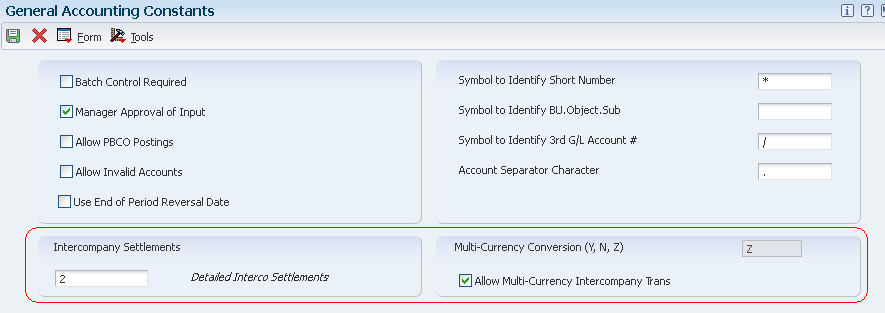
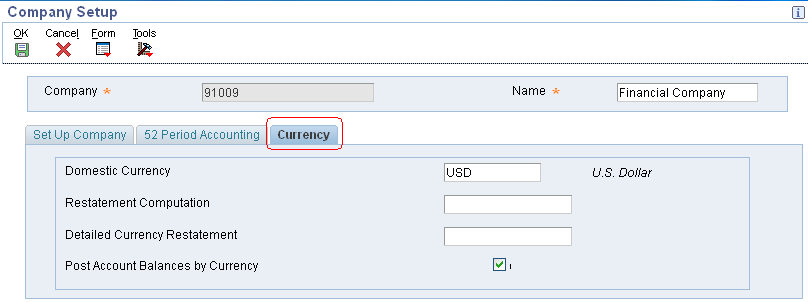
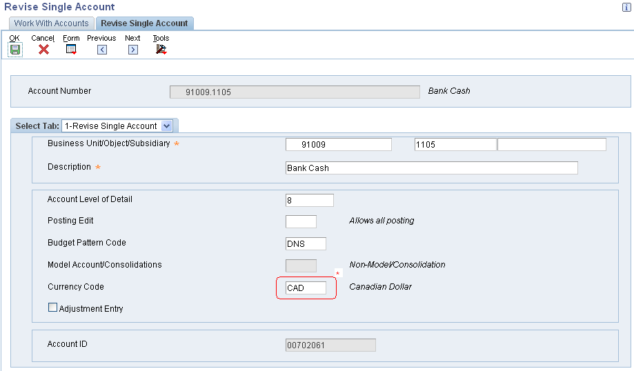
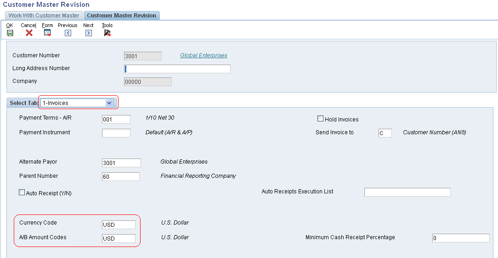

| Purpose |
| Overview |
| Scope |
| Details |
| Prerequisites Setup |
| Setting Up Multicurrency Constants |
| Setting Up Currency Codes |
| Setting Up Companies |
| Setting Up Monetary Accounts |
| Setting Up Ledger Types |
| Setting Up Address Book |
| Setting Up Multicurrency AAIs |
| Setting Up Exchange Rates |
| Updating Domestic Currency Codes |
| Overview |
| Post Conversion Tasks |
If you have been using EnterpriseOne software without multicurrency activated and are now changing to multicurrency processing, review and complete the items in the Prerequisites Setup section. Upon completing them, complete the task Updating Domestic Currency Codes to update all existing transactions from a blank currency code to a valid currency code. Finally, after updating the domestic currency codes, you must complete additional Post Conversion Tasks. Then you can begin working in a multicurrency environment.
In case you are setting up EnterpriseOne Software for the first time with multicurrency, only review the items in the Prerequisites Setup section and ignore the Updating Domestic Currency Codes section.
This document is intended for Finance Functional users who will be involved in the multicurrency processing in the General Accounting system.
If you have been using EnterpriseOne software without multicurrency activated and are now changing to multicurrency processing, review and complete the following actions:

Before you can use any of the multicurrency features, you must set up the following system wide constants in the General Accounting Constants program (P0000):
Use these constants to specify the default conversion method for multicurrency processing to allow multicurrency intercompany transactions and to specify an intercompany settlement method. The system stores this multicurrency information in the General Constants table (F0009).
Multicurrency Conversion Constant (Y, N, Z)
To activate EnterpriseOne Multicurrency Processing, you must set the constant in the Multicurrency Conversion field as follows depending on the default conversion method that you want to use for converting amounts from one currency to another:
Example:
1 US Dollar (USD) = 50 Indian Rupees (INR) or 1 INR = .0200000 USD.
For 'Y' Multiplier method, assuming USD is the domestic currency of the company and INR foreign, the system will do the following:
Domestic amount (in USD) = Foreign Amount * Exchange Rate
5000 INR * (.0200000) = 100.00 USD.
For 'Z' Divisor method, assuming USD is the domestic currency of the company and INR foreign, the system will do the following:
Domestic amount (in USD) = Foreign Amount / Exchange Rate
5000 INR / 50 USD = 100.00 USD.
When the multicurrency conversion constant is activated, the system displays currency fields on various entry and inquiry forms. You can override the default conversion method when you set up specific currency relationships.
NOTE: After you begin using EnterpriseOne Multicurrency Processing, do not change the multicurrency conversion constant or you will get unpredictable results, such as:
Appropriate security should be placed on the General Accounting Constants program so that personnel do not inadvertently change the value in this field. Once a Multi-Currency Conversion method has been selected (N, Y or Z), the system performs validations in all the tables with currency related fields. Any issues caused by changes made to the Multi-currency Conversion in the General Accounting Constants will NOT be supported by Oracle Support.
In case it has been done, the attached excel sheet CurrencyFile.xls has the list of tables that the currency field CRCD needs to be reviewed to prevent any data integrity issues.
Intercompany Settlements Method
Typically, companies that work with different base currencies create transactions and balancing entries between their companies. These are called intercompany transactions. If the organization allows transactions between its companies, and those companies have different base currencies, the companies will be out of balance unless you create and post balancing entries. These balancing entries ensure that the net balance for each company equals zero i.e. debits equal credits. You can enter and distribute invoices, vouchers, and journal entries to multiple companies with different base currencies. The post program makes currency adjustments and automatic entries for the intercompany settlements.
For example, assume the organization consists of companies in France, Canada, and the United States with base currencies of the euro (EUR), Canadian dollar (CAD), and U.S. dollar (USD) respectively. You create a USD transaction that is distributed to general ledger accounts in the French company (EUR) and Canadian company (CAD). The journal entry distribution crosses company and currency boundaries and, therefore, balancing entries must be created for the multicurrency intercompany settlements.
To perform intercompany settlements between companies with different base currencies, you must assign a method in the Intercompany Settlements field in the General Accounting Constants program (P0000). Following methods are valid for EnterpriseOne Multicurrency Processing:
Allow Multi-Currency Intercompany Transactions
Even if a company does not enter intercompany transactions, be aware that EnterpriseOne software was designed to allow multicurrency intercompany transactions and settlements. Regardless of whether you actually enter intercompany transactions, you must select the check box to allow multicurrency intercompany transactions and specify the intercompany settlement method '2' or '3' in the General Accounting Constants program. As long as you do not enter batches that contain transactions between companies, the system does not create intercompany transactions and settlements.
Offset Method (P0000)
The intercompany settlement method that you specify in the General Accounting Constants program must be compatible with the offset method specified in the Accounts Receivable Constants and Accounts Payable Constants programs. The offset entry method is the method that the system uses when posting vouchers, payments, invoices, receipts, and drafts to the Account Ledger table (F0911). If the methods are not compatible, the system issues an error message when you post transactions to the general ledger.
Following table shows the intercompany settlement methods and their compatibility with the Accounts Receivable and Accounts Payable offset methods:
| Intercompany Settlement Methods |
Offset Method B (one offset per batch) |
Offset Method Y (one offset per transaction) |
Offset Method S (one offset per pay item) |
|---|---|---|---|
| 2 - Detail (Multi-Currency) | Incompatible | Compatible | Compatible |
| 3 - Configured Hub (Multi-Currency) | Incompatible | Compatible | Compatible |
The post program uses the offset method to determine whether to create an offset entry for each detail record by batch, transaction, or pay item. For Multicurrency Processing, you cannot use the batch offset method 'B' because the post programs cannot post batches of invoices, vouchers, receipts, and payments that contain one or more foreign or alternate currencies.
NOTE:
For more information on setting up General Accounting Constants (P0000) and Intercompany Settlement methods, refer to following documents:
Overview
Currency Codes need to be setup for every currency in which you will transact business with other listed companies. After you set up currency codes, you assign them to:
Companies.
Monetary Accounts.
Suppliers and Customers.
Ledger Types.
The currency codes that are provided in the EnterpriseOne software are recognized by the International Organization for Standardization (ISO).
Setup
You setup currency codes in Work with Currency Code and Rates (P0013) application. For currency amounts to reflect the correct decimal positions, you must set up a currency code for each currency with which you work. For each currency code, you also assign a program that converts amounts to words when writing payments.
The system stores currency code information in the Currency Codes table (F0013).
Currency Code
Define a three-character currency code for each currency used.
Display Decimals
Amount to Word Translator
How Currency Decimals are handled?
The number of decimal positions that the system displays for an amount varies according to the currency code and the type of ledger used for the transaction. Following table describes how the system manages decimals in a multicurrency environment:
| Decimals | Description |
|---|---|
| Decimals for amounts that appear without a company number. | Controlled by the value of the Display Decimals field (CDEC) in the data dictionary for the amount fields used. |
| Decimals for transaction amounts in ledger type AA (domestic currency). | Controlled by the base (company) currency code. The number of decimals for a currency is defined in the Currency Codes table (F0013). |
| Decimals for amounts in unit ledgers (ledger types ending in U). | Controlled by the value of the Display Decimals field (CDEC) in the data dictionary for the amount fields used. |
| Decimals for transaction amounts in ledger type CA (foreign currency).
The Post Account Balances by Currency check box is selected. |
Controlled by the transaction currency code. The number of decimals for a currency is defined in the F0013 table. |
| Decimals for transaction amounts in ledger type CA (foreign currency)
The Post Account Balances by Currency check box is cleared. |
Controlled by a general ledger account currency code, if applicable, or the transaction currency code associated with a specific total amount. The system obtains the currency code from these tables in the order listed:
|
| Decimals for transaction amounts or balances that are not unit, AA, or CA ledger types. | Controlled by the base (company) currency code. The number of decimals for a currency is defined in the F0013 table.
Note: An exception to this rule occurs when a currency has been assigned to a ledger type in the Ledger Type Master File table (F0025). The decimals are controlled by the currency assigned to the ledger, not the company. |
You use the Work with Companies program P0010 to set up your companies for multicurrency for following:
The system stores company currency information in the Company Constants table (F0010).

You must set up the following multicurrency information for each company in your organization under the Currency tab:
Domestic Currency
Restatement Computation
Detailed Currency Restatement
Post Account Balances by Currency
For most general ledger accounts, you want the system to accept transactions in any currency. This is accomplished by not assigning a currency code to the account. For those accounts in which you want to accept only transactions in a specific currency, you must assign a currency code to the account. These accounts are called monetary accounts. Monetary accounts are usually bank or cash accounts.
For example, a Japanese organization has a company with a currency that is Japanese yen, and that company has a bank account that is Canadian dollars (CAD). If you assign CAD as the currency of that account, it becomes a monetary account and the system accepts only transactions in that currency.
You use the Work with Accounts program (P0901) to set up your monetary accounts. The system stores currency codes for monetary accounts in the Account Master table (F0901).

*Assign a currency code to an account to designate it as a monetary account.
When you work with multiple currencies, the system uses ledger types AA (actual amounts) and CA (foreign currency amounts) and, optionally the following restatement ledger types:
| Ledger Types |
Restatement Program |
UDC Table |
|---|---|---|
|
Detailed Currency Restatement (R11411) | UDC table 09/LT |
| AC: Balance restatement | Balance Currency Restatement (R11414) |
|
| AD: As if restatement | "As If" Currency Restatement (R11415). |
|
Use the Ledger Type Rules Setup application (P0025) to define the financial rules for the ledger type and, if applicable, assign a specific currency code.
For customers and suppliers, you must assign currency codes respectively in the Customer Master (P03013) and Supplier Master (P04012) to specify the currency of their invoices and vouchers.
Assigning Currency Codes to a Customer Record
Access the Customer Master Revision form (P03013). Currency code information for customers is stored in the Customer Master by Line of Business table (F03012).

Currency Code
A/B Amount Codes
Assigning Currency Codes to a Supplier Record
Access the Supplier Master Revision form (P04012). The currency codes that you assign on this form are stored in the Supplier Master table (F0401).

Default Code
A/B Amount Code
You set up AAIs to define accounts for multicurrency processing in the EnterpriseOne General Accounting system for:
When the system calculates unrealized gains and losses on monetary accounts, posts account balances by currency, and restates amounts in a different currency, it uses AAIs to distribute the amounts to the correct general ledger accounts.
Some AAI items have a suffix of xxx to accommodate a three-character currency code. You use the xxx suffix to set up multiple currency-specific AAI items for each company. If you do not specify a currency code, the system uses the currency code of the company as the default.
You can set up AAIs for company 00000, or you can set up specific AAIs for an individual company. Each AAI item in the EnterpriseOne system has a hierarchical order by which the system locates an account number. This is an example of a hierarchical order:
| Purpose | AAIs |
|---|---|
| To record Unrealized Gains and Losses on Monetary Bank Accounts. |
where xxx is the currency of the company assigned to the monetary account. |
|
To track and post balances by currency in the Account Balances table (F0902). |
Set up AAI items PBCxx like PBC01 - PBC02 and so on for beginning and ending account ranges to post balances by currency. |
| To track multicurrency intercompany transactions and settlements. |
Setup AAI Item ICCC for multi-currency intercompany settlement methods - Detail and Configured hub. |
| Detailed Currency Restatement (R11411). |
|
As part of working with multiple currencies, you need to ensure that the transactions that you enter are based on the most current exchange rates as quoted in the international financial market. The exchange rates:
You use the Work with Currency Exchange Rates program (P0015A) to set up and control the exchange rates for various currencies. The system stores exchange rates information in the Currency Exchange Rates table (F0015).

From Currency Code and To Currency Code
When you initially set up the EnterpriseOne system for multicurrency processing, you set up exchange rates between the currency of a company (the from currency) with whom you do business and the domestic currency (the to currency). Throughout the EnterpriseOne Multicurrency Processing system, the from currency refers to the foreign currency and the to currency refers to the domestic currency.
Effective Date
The beginning date that an exchange rate is effective for a currency relationship.
Calculation Method
Select one of the following calculation methods for exchange rate:
Allow Spot Rate
Conversion Method (Y/Z)
Multiplier Rate
Divisor Rate
Unlike other setup tasks, setting up exchange rates is a recurring task. After the initial exchange rate setup, you must update currency exchange rates on a regular basis to provide a default rate for transactions and for realized and unrealized gains and losses. After the initial setup, you can continue to set up exchange rates using the Currency Exchange Rate Entry program (P0015A). Or, if you have a large volume of exchange rates to set up at one time, consider using the Currency Exchange Rates Speed Revisions program (P11154) or the External Exchange Rate Processor program (R0015Z1). For more information on R0015Z1, refer to Document 664752.1 Overview of Currency Exchange Rates Upload Process.
To change to multicurrency processing, you must run the Load Domestic Currency Code programs to update all existing transactions with a valid currency code. Prior to running these programs, all records must have a blank currency code. The program does not finish if any records have a currency code.
To update existing transactions with a currency code, you run the Load Domestic Currency Code program for each EnterpriseOne system that you use. These batch programs also update the mode for each transaction and print an error report if either of these situations exist:
A company does not exist in the Company Constants table (F0010).
To setup a company or assign a currency code to a company, refer to Setting up Companies.
Following table lists the Load Domestic Currency Code programs and the tables that they update:
| Program | Tables Updated |
|---|---|
| Load Domestic Curr Code - G/L (R11809) | Account Ledger (F0911) |
| Load Domestic Curr Code -A/P (R11804) |
|
| Load Domestic Curr Code - A/R (R11803) |
|
| Load Domestic Curr Code - Tax (R11818) | Taxes (F0018) |
| Load Domestic Curr Code - Acct. Balances (R11802) | CRCX field in Account Balances (F0902) |
| Load Domestic Curr Code - System 48S/52 (R11848S) |
|
| Load Domestic Curr Code - Real Estate Mgmt (R11815) |
|
| Load Domestic Curr Code - Sales (R11842) |
|
| Load Domestic Curr Code - Procurement (R11843) |
|
After you run the Load Domestic Currency Code programs to update transactions with valid currency codes, you must: